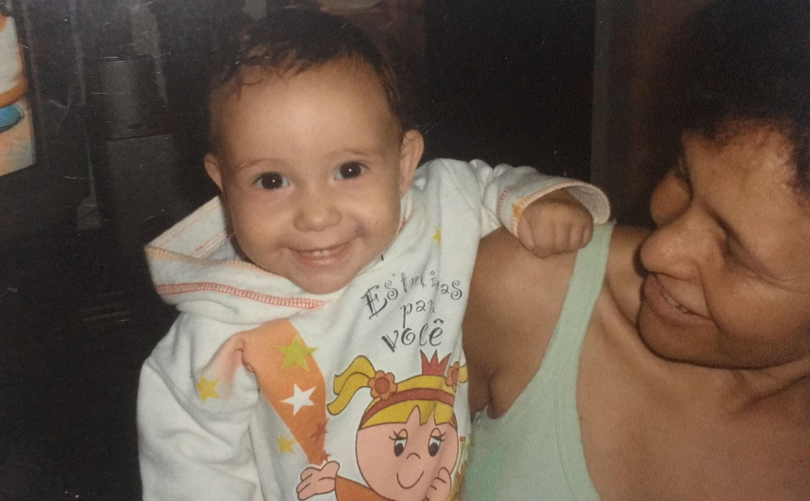
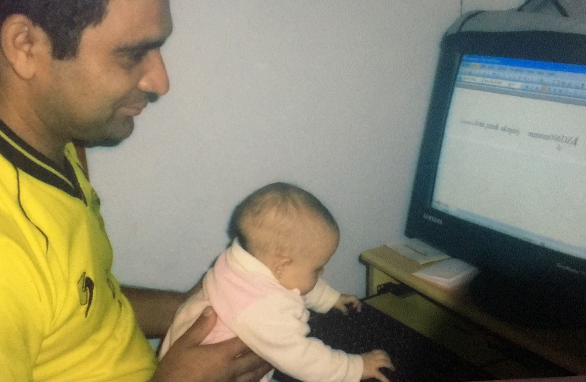
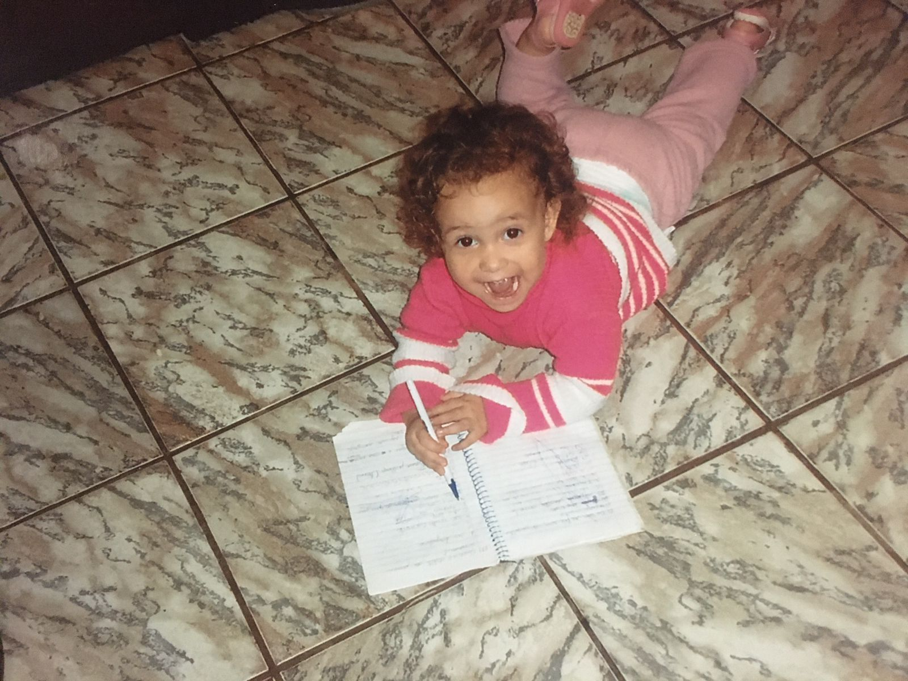
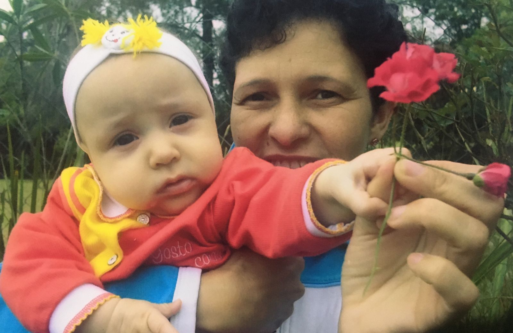
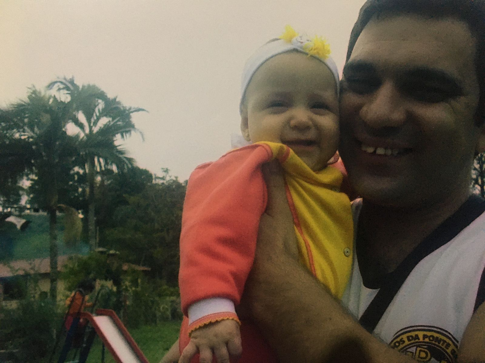
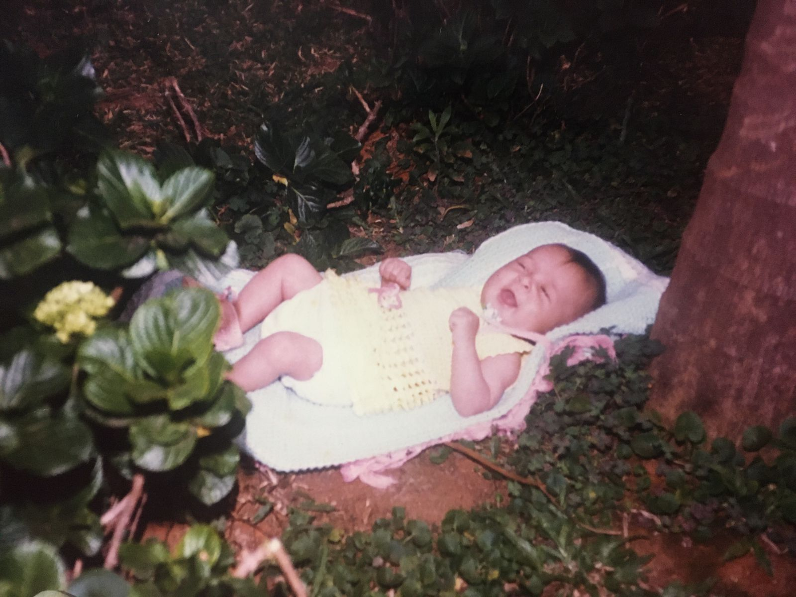

Eu dedico todo este projeto à minha criança interna, àquela parte de
mim que nunca deixou de sonhar, nunca deixou de acreditar e sempre
manteve viva a chama da curiosidade e da esperança. É para ela que
dirijo cada conquista e cada pequeno passo dado nesta jornada.
Desde os primeiros dias, quando imaginava mundos fantásticos e
desenhava futuros brilhantes, até os momentos mais desafiadores,
quando a realidade parecia apagar os sonhos, ela nunca desistiu. Foi
essa criança, com olhos brilhantes e coração destemido, que me
inspirou a continuar estudando, a buscar o conhecimento e a enfrentar
cada obstáculo com coragem e determinação.
A cada vitória, a cada objetivo alcançado, vejo o reflexo daquela
criança que, um dia, olhou para o céu e viu possibilidades infinitas.
É ela quem me lembra que os sonhos não têm limites e que, com
dedicação e esforço, tudo é possível.
Portanto, dedico este projeto a você, minha criança interna. Obrigado
por nunca deixar de sonhar, por nunca deixar de acreditar e por ser a
fonte incessante de inspiração e motivação. Este é o nosso triunfo, e
a jornada continua, sempre guiada pela sua visão e paixão.
Dedico também aos meus pais que sempre estiveram ao meu lado me dando
todo o apoio do mundo e me fazendo a criança sonhadora mais feliz do
mundo! Eu amo vocês!





